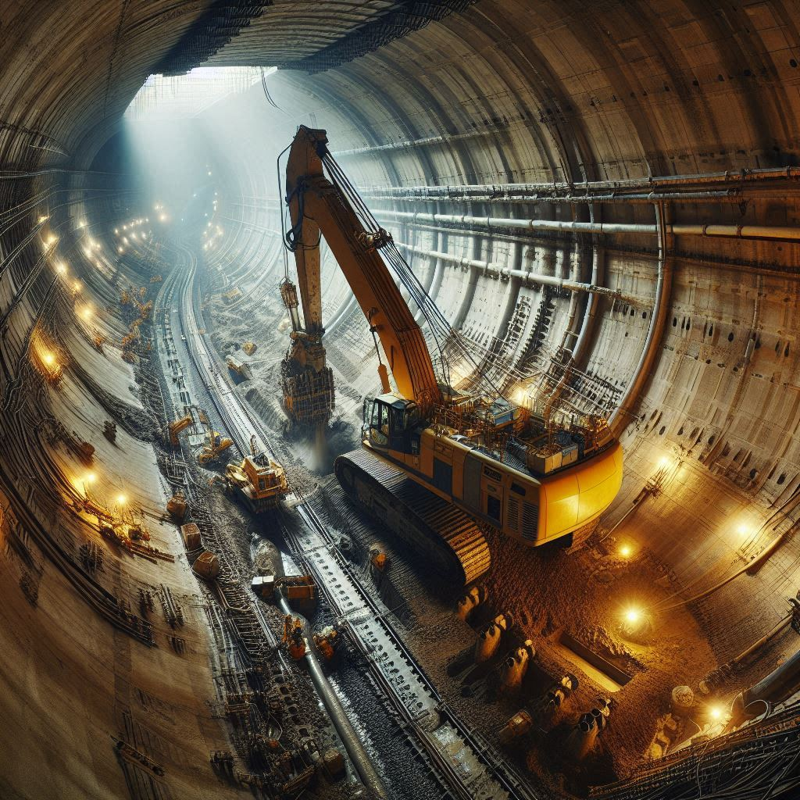

期末實作測試 學號:91135101 姓名:林依亭
隧道工程
全斷面挖掘機工法
工作原理
全斷面挖掘機工法通常使用一種大型機械裝置，即全斷面挖掘機（Tunnel Boring Machine, TBM）。
這種機械設備被設計成圓筒形，直徑與預計隧道尺寸相當，並且在前端裝有鑽頭或切割刀具。
全斷面挖掘機能夠同時進行地層的切割和穩定作業，以及在後方進行土層處理和支撐工作。
施工過程
- 機械設置和校準：在開始挖掘之前，需要將全斷面挖掘機裝配在挖掘井或起點，並進行必要的校準和測試。
確保挖掘機的正確安裝和操作，以及周圍環境的安全。
- 開始挖掘：一旦全斷面挖掘機就位，開始進行挖掘作業。
機械前端的鑽頭或刀具會旋轉切割地層，同時通過液壓系統推進自身。
挖掘過程中，機械會不斷向前推進，同時將切割的土層和岩層送到隧道內的輸送系統中。
- 土層處理和支撐：在全斷面挖掘機的後方，設置有土層處理和支撐工作的機械手臂或系統。
這些系統可以進行土層的處理、支撐材料（如噴灌混凝土）的施工，以及隧道內部的補強工作。
- 監控和調整：施工過程中，需要持續監控隧道的地質條件、機械運行狀態以及支撐的效果。
根據監測數據，及時調整挖掘速度、支撐策略，以確保隧道的安全和穩定性。

優點
- 高效率和快速施工：全斷面挖掘機能夠連續進行挖掘、土層處理和支撐，大大提高了施工效率。
- 精確度和穩定性：機械化挖掘和支撐作業可以確保隧道的直徑和地層穩定性，減少了人為因素對施工品質的影響。
- 安全性：相比傳統的開挖方法（如爆破法），全斷面挖掘機減少了振動和噪音，降低了施工過程中的安全風險。